12 ta sahna rasmi tayyor. Endi har sahna uchun bitta ish: Veo'da shu kartadagi rasmni yuklang, o'lchamni 9:16 qiling va «Nusxa olish» bilan Veo promptini qo'ying (8 s). Rasm promptlari (ChatGPT) endi kerak emas, sahifadan olib tashlandi; ular repoda (rasm_promptlar.py) saqlanadi. Yozuvlarni (bot nomi, belgilar) montajda o'zimiz qo'shamiz.
Chiroq stolda, Usta o'ng qo'li bilan ushlaydi, chap qo'li stolda; Diyorning ikkinchi qo'li cho'ntagida. Usta namunadan biroz kattaroq ko'rinadi, qoldi.
Ovoz
Usta: To'xta! «Siz yutdingiz» degan notanishga SMS kodni hech qachon o'qib berma.
Vertical 9:16, 8 seconds. Start from the attached image of scene 1. Camera: fast snap zoom-in (crash zoom) from the two faces down to the golden key above the phone, ending in a close-up of the key and the red eyes. Action: Usta's hand tightens on Diyor's wrist and stops it; Diyor's fingers tremble and the golden key swings slightly above the phone; the red fox eyes on the screen narrow and glow brighter; the lantern flame flickers. Keep every character exactly as in the image for the whole clip: the same face, age, hair, clothes, colours and props, the same number of arms and hands. Keep the background and the dark hand-drawn illustration style exactly as in the image. No new people, no extra objects, no text, no letters, no captions, no subtitles, no watermark. No dialogue and no lip-sync: mouths stay closed or move only slightly; only quiet ambient sound.
02
2-sahna — 9:16 (tik)
6–11 s
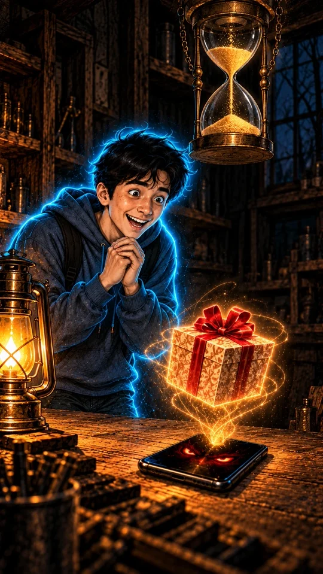
✅ tasdiqlandi (tahrirdan keyin)
Tahrirdan keyin: telefon bitta (stolda), Diyor qo'llarini iyagi tagida qovushtirgan, qum faqat soat ichida.
Ovoz
Diyor: Voy! iPhone yutibman! Faqat besh daqiqa vaqt bor ekan.
Vertical 9:16, 8 seconds. Start from the attached image of scene 2. Camera: slow tilt up from the glowing gift box above the phone to Diyor's joyful face and then to the hourglass above him, ending on Diyor and the hourglass. Action: the glowing gift box stays floating right above the phone on the table the whole clip and only turns slowly in place, it never flies away and never lands on the table; Diyor bounces on his toes with joy, hands clasped under his chin; the sand in the hourglass only falls down from the top bulb into the bottom bulb, the top bulb slowly empties and the bottom bulb slowly fills, never the other way; no smoke, no lightning, no electric sparks; dust glitters softly in the lantern light. Keep every character exactly as in the image for the whole clip: the same face, age, hair, clothes, colours and props, the same number of arms and hands. Keep the background and the dark hand-drawn illustration style exactly as in the image. No new people, no extra objects, no text, no letters, no captions, no subtitles, no watermark. No dialogue and no lip-sync: mouths stay closed or move only slightly; only quiet ambient sound.
03
3-sahna — 9:16 (tik)
12–21 s
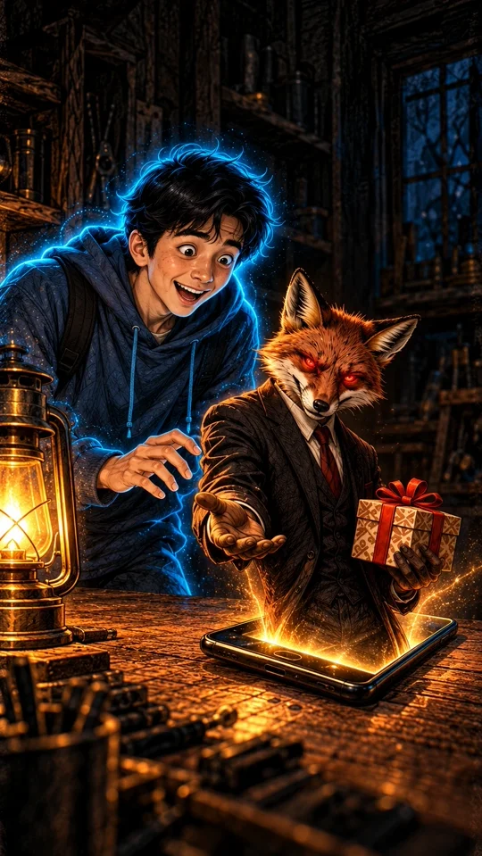
✅ tasdiqlandi (941×1672)
Tulki telefondan chiqadi, bir qo'lida sovg'a, ikkinchisini cho'zgan; Diyor qo'lini cho'zadi. Telefon bitta, stolda. Namunaga mos.
Vertical 9:16, 8 seconds. Start from the attached image of scene 3. Camera: slow push-in toward the fox leaning out of the phone screen, ending in a medium close-up of the fox and Diyor's reaching hand. Action: the fox slides only a little further out of the glowing screen with a thin sly fake smile, offering the gift box and stretching his open paw toward Diyor; Diyor's hand slowly reaches toward the paw; red light pulses softly from the screen. The fox keeps the same sly face as in the image for the whole clip: narrow cunning eyes glowing bright red with no visible pupils, never round cartoon eyes, never orange eyes, never a friendly or cute face, the mouth stays closed in a thin smile; no fire, no flames. Keep every character exactly as in the image for the whole clip: the same face, age, hair, clothes, colours and props, the same number of arms and hands. Keep the background and the dark hand-drawn illustration style exactly as in the image. No new people, no extra objects, no text, no letters, no captions, no subtitles, no watermark. No dialogue and no lip-sync: mouths stay closed or move only slightly; only quiet ambient sound.
04
4-sahna — 9:16 (tik)
22–26 s
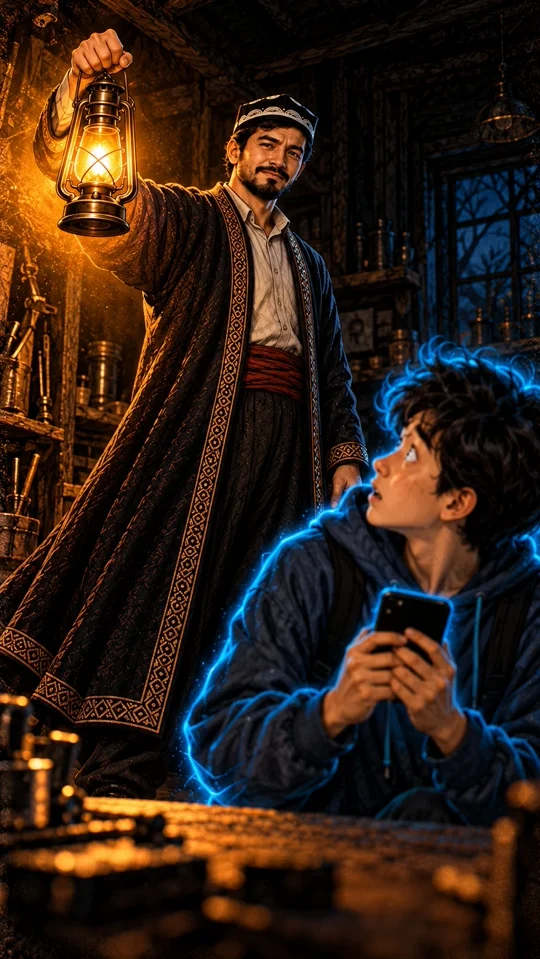
✅ tasdiqlandi
Usta chiroqni ko'taradi, yuzi namunadek. Kichik farq: Diyor telefonni qo'lida ushlab turibdi (3 va 5-sahnada telefon stolda) — 3–4 soniyalik kadrda sezilmaydi, qoldi.
Ovoz
Usta: Kodni aytishdan oldin, SMSni menga ovoz chiqarib o'qi.
Vertical 9:16, 8 seconds. Start from the attached image of scene 4. Camera: low-angle shot, the camera slowly cranes up with the lantern as Usta raises it, ending on Usta's calm face lit by the lantern. Action: Usta slowly raises the lantern higher and its warm light spreads and pushes the shadows back across the workshop; Diyor freezes and looks up at him; the cyan glow around Diyor flickers softly. Keep every character exactly as in the image for the whole clip: the same face, age, hair, clothes, colours and props, the same number of arms and hands. Keep the background and the dark hand-drawn illustration style exactly as in the image. No new people, no extra objects, no text, no letters, no captions, no subtitles, no watermark. No dialogue and no lip-sync: mouths stay closed or move only slightly; only quiet ambient sound.
05
5-sahna — 9:16 (tik)
27–33 s
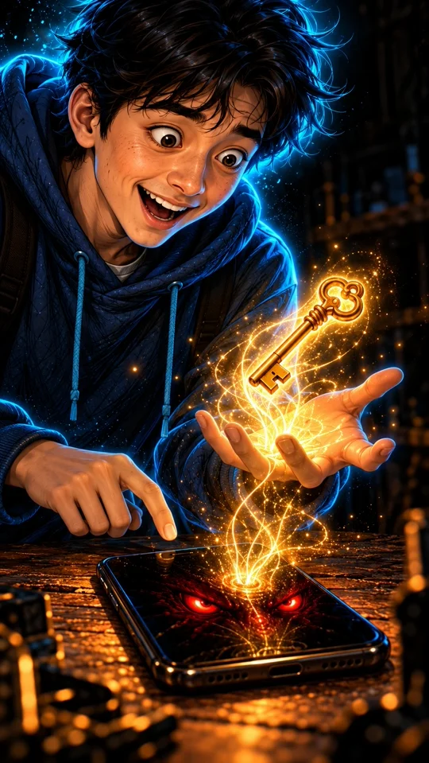
✅ tasdiqlandi (tahrirdan keyin)
Tahrirdan keyin Diyorning qo'llari yosh (ajin, tomir yo'q). Bir barmog'i telefon ustida to'xtagan, kaftida kalit.
Ovoz
Diyor: Telegram kodi… «Bu kodni hech kimga bermang»…
Vertical 9:16, 8 seconds. Start from the attached image of scene 5. Camera: macro close-up, slow rack focus from Diyor's finger above the phone to the golden key in his palm. Action: speed ramp: glowing light lines rise from the phone into his palm and melt into the golden key; as his finger moves toward the screen, time slows into extreme slow motion and the finger stops just above the glass, trembling; then normal speed resumes as the key glows brighter. Keep every character exactly as in the image for the whole clip: the same face, age, hair, clothes, colours and props, the same number of arms and hands. Keep the background and the dark hand-drawn illustration style exactly as in the image. No new people, no extra objects, no text, no letters, no captions, no subtitles, no watermark. No dialogue and no lip-sync: mouths stay closed or move only slightly; only quiet ambient sound.
06
6-sahna — 9:16 (tik)
34–42 s
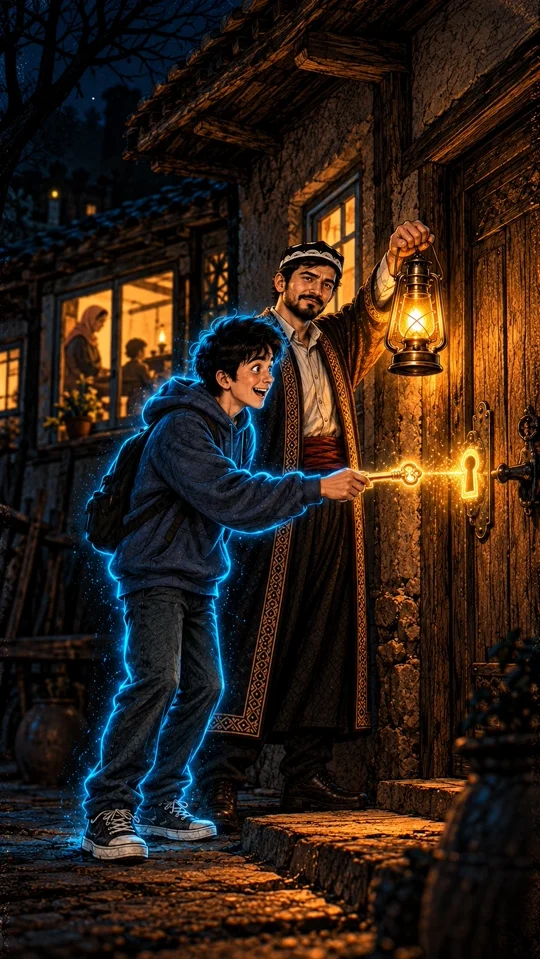
✅ tasdiqlandi
Diyor kalitni qulfga tutadi, Usta chiroqni ko'taradi. Derazalar moviy emas, iliq sariq chiqdi (ichida ona va oila soyalari) — 7 va 9-sahna promptlari shunga moslandi.
Ovoz
Usta: Bu sovg'a kodi emas. Bu sening Telegram'ingning kaliti…
Vertical 9:16, 8 seconds. Start from the attached image of scene 6. Camera: smooth lateral dolly (truck) right along the house wall, from Diyor and Usta to the glowing keyhole, ending on the key in front of the keyhole. Action: Usta holds the lantern near the door; Diyor slowly brings the golden key toward the keyhole; a thin line of gold light connects the key and the keyhole; inside the warm windows the family silhouettes move gently. Keep every character exactly as in the image for the whole clip: the same face, age, hair, clothes, colours and props, the same number of arms and hands. Keep the background and the dark hand-drawn illustration style exactly as in the image. No new people, no extra objects, no text, no letters, no captions, no subtitles, no watermark. No dialogue and no lip-sync: mouths stay closed or move only slightly; only quiet ambient sound.
07
7-sahna — 9:16 (tik)
43–49 s
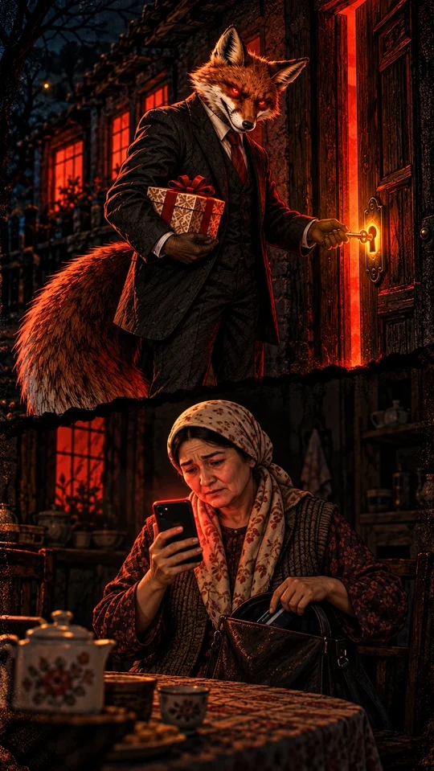
✅ tasdiqlandi
Tepada Tulki kalitni buraydi (bir qo'lida sovg'a), derazalar qizil; pastda Ona qizil telefonga qarab, sumkasidan karta oladi. Ona namunadek (xavotirdan biroz kattaroq ko'rinadi). Kartada yozuv yo'q.
Ovoz
Usta: Ular sovg'a bermaydi. Sening nomingdan yaqinlaringdan pul so'rashadi.
Vertical 9:16, 8 seconds. Start from the attached image of scene 7. Camera: high-angle shot, slow pull-back that reveals both halves of the frame, ending wide on the fox at the door above and the mother below. Action: the fox turns the golden key and the door opens with a red glow; the warm windows slowly turn red one by one; below, the worried mother stares at her red glowing phone and slowly pulls a bank card out of her purse. Keep every character exactly as in the image for the whole clip: the same face, age, hair, clothes, colours and props, the same number of arms and hands. Keep the background and the dark hand-drawn illustration style exactly as in the image. No new people, no extra objects, no text, no letters, no captions, no subtitles, no watermark. No dialogue and no lip-sync: mouths stay closed or move only slightly; only quiet ambient sound.
08
8-sahna — 9:16 (tik)
50–61 s
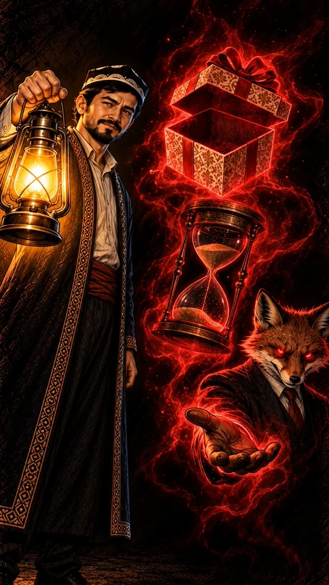
✅ tasdiqlandi
Uch hiyla tepadan pastga: ochiq bo'sh sovg'a qutisi, qum soat, Tulkining cho'zilgan panjasi (Tulkining o'zi ham ko'rinadi). Usta chiroqni ko'targan, yuzi namunadek. Belgilarni montajda yozamiz.
Ovoz
Usta: Uchta belgi. Tanlovda qatnashmagansan. Shoshiltirishyapti. Kod so'rashyapti…
Vertical 9:16, 8 seconds. Start from the attached image of scene 8. Camera: slow tilt down from the empty gift box to the hourglass and then to the fox's open paw, ending on the paw and the fox's red eyes. Action: the three tricks glow red one after another as the camera passes them: the empty gift box opens wider, the sand runs in the hourglass, the fox's paw beckons; Usta's lantern light moves over them from the left. Keep every character exactly as in the image for the whole clip: the same face, age, hair, clothes, colours and props, the same number of arms and hands. Keep the background and the dark hand-drawn illustration style exactly as in the image. No new people, no extra objects, no text, no letters, no captions, no subtitles, no watermark. No dialogue and no lip-sync: mouths stay closed or move only slightly; only quiet ambient sound.
09
9-sahna — 9:16 (tik)
62–71 s
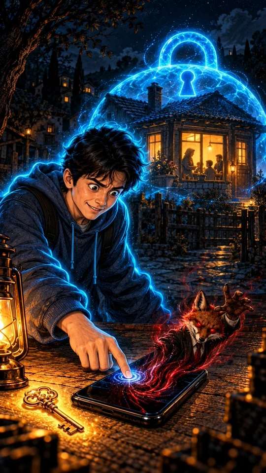
✅ tasdiqlandi
Diyor ekranni bosadi, Tulki qizil girdob bilan telefonga tortiladi, uy ustida moviy qulf-gumbaz; kalit stolda qoldi. Kichik farq: uy 6-sahnadagidan boshqacha (panjara, boshqa tom) — fonda, qoldi.
Vertical 9:16, 8 seconds. Start from the attached image of scene 9. Camera: slow dolly out and crane up from Diyor's finger on the phone to the house behind him, ending wide on the glowing blue padlock dome over the house. Action: Diyor presses the screen and it goes dark; the fox is sucked back into the black glass in a red swirl and disappears; the soft cyan-blue padlock dome slowly closes over the roof of the house and its glow settles. Keep every character exactly as in the image for the whole clip: the same face, age, hair, clothes, colours and props, the same number of arms and hands. Keep the background and the dark hand-drawn illustration style exactly as in the image. No new people, no extra objects, no text, no letters, no captions, no subtitles, no watermark. No dialogue and no lip-sync: mouths stay closed or move only slightly; only quiet ambient sound.
10
10-sahna — 9:16 (tik)
72–77 s
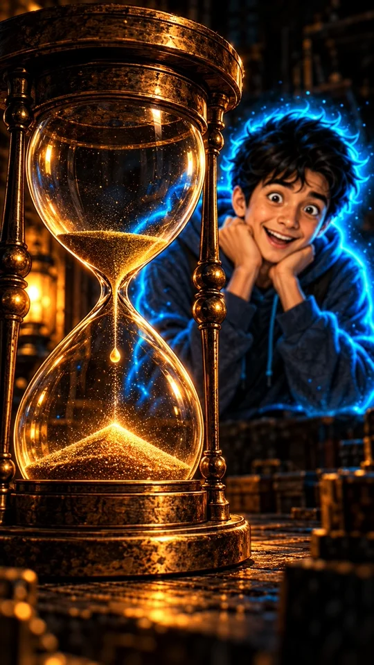
✅ tasdiqlandi
Qum soat oldinda, orqada Diyor yuzini kaftlariga qo'yib quvonadi (2 qo'l). Tepada hali qum bor — videoda oxirgi qum tushib bitadi (Veo prompti).
Ovoz
Diyor: Besh daqiqa tugadi. Men esa hech narsa yo'qotmadim.
Vertical 9:16, 8 seconds. Start from the attached image of scene 10. Camera: locked-off static camera on the hourglass, then a slow rack focus to Diyor's face at the end. Action: speed ramp: the last sand runs out of the top bulb; the very last grain falls in extreme slow motion through the neck and lands on the pile with a tiny golden sparkle and a soft click; normal speed resumes; the focus moves to Diyor, who laughs with relief, his cyan glow growing brighter. Keep every character exactly as in the image for the whole clip: the same face, age, hair, clothes, colours and props, the same number of arms and hands. Keep the background and the dark hand-drawn illustration style exactly as in the image. No new people, no extra objects, no text, no letters, no captions, no subtitles, no watermark. No dialogue and no lip-sync: mouths stay closed or move only slightly; only quiet ambient sound.
11
11-sahna — 9:16 (tik)
77–83 s
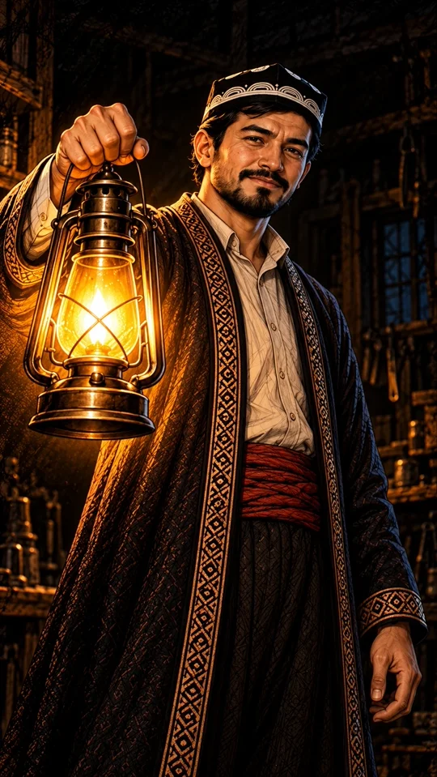
✅ tasdiqlandi
Usta chiroqni ko'tarib kameraga qaraydi, yuzi namunadek, ikkinchi qo'li pastda.
Ovoz
Usta: Haqiqiy sovg'a senga hech qachon kod so'ratmaydi.
Vertical 9:16, 8 seconds. Start from the attached image of scene 11. Camera: slow push-in toward Usta's face, ending in a close-up of his eyes and the lantern. Action: Usta looks straight into the camera with a calm wise smile, holding the lantern near his face; the flame flickers softly and warm light moves over the embroidery of his chapan. Keep every character exactly as in the image for the whole clip: the same face, age, hair, clothes, colours and props, the same number of arms and hands. Keep the background and the dark hand-drawn illustration style exactly as in the image. No new people, no extra objects, no text, no letters, no captions, no subtitles, no watermark. No dialogue and no lip-sync: mouths stay closed or move only slightly; only quiet ambient sound.
12
12-sahna — 9:16 (tik)
84–95 s
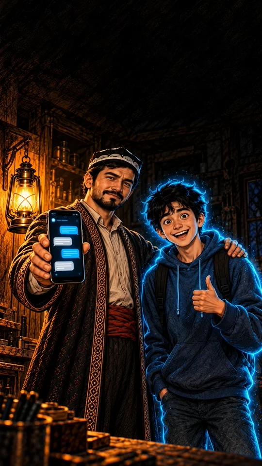
✅ tasdiqlandi
Usta o'ng qo'lida telefon, chap qo'li Diyorning yelkasida, chiroq devordagi ilgakda; Diyor bosh barmog'ini ko'taradi. Ekran tepasida mayda ma'nosiz yozuv bor — montajda ekran ustiga bot suhbatini (@sahiychishopbot) qo'yamiz. Tepada sarlavha uchun bo'sh joy bor.
Ovoz
Usta: Shubhali xabar keldimi? Skrinshotini botimizga yuboring: @sahiychishopbot…
Vertical 9:16, 8 seconds. Start from the attached image of scene 12. Camera: slow dolly out, ending in a medium shot of both of them with dark empty space above for a title. Action: Usta holds the phone toward the camera and the chat bubbles on the screen glow softly; his other hand stays on Diyor's shoulder; Diyor smiles and gives a thumbs up; the hanging lantern sways slightly. Keep every character exactly as in the image for the whole clip: the same face, age, hair, clothes, colours and props, the same number of arms and hands. Keep the background and the dark hand-drawn illustration style exactly as in the image. No new people, no extra objects, no text, no letters, no captions, no subtitles, no watermark. No dialogue and no lip-sync: mouths stay closed or move only slightly; only quiet ambient sound.